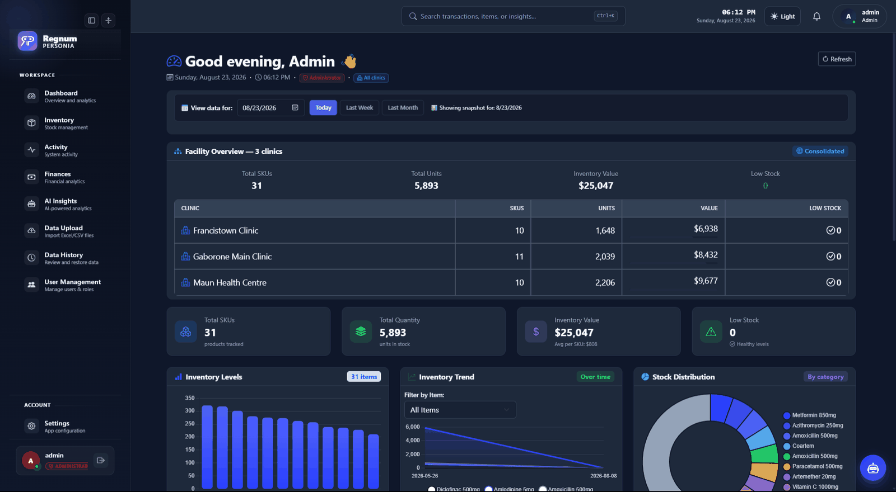
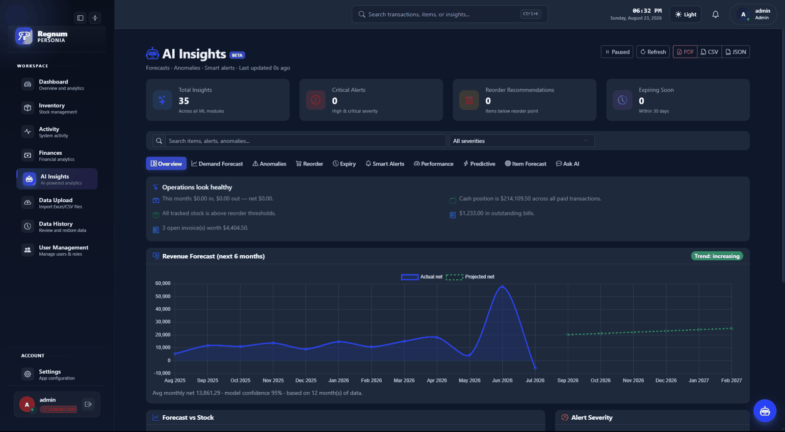
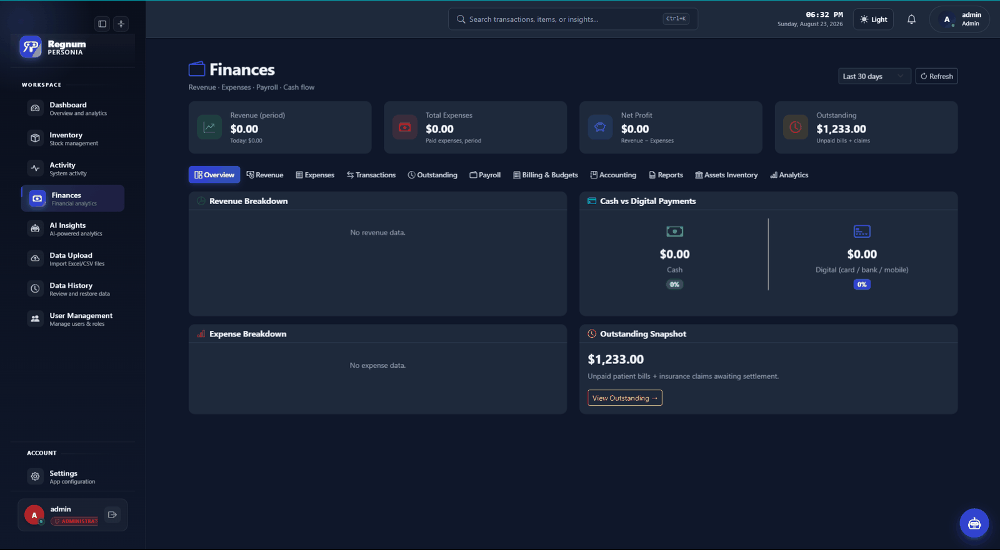
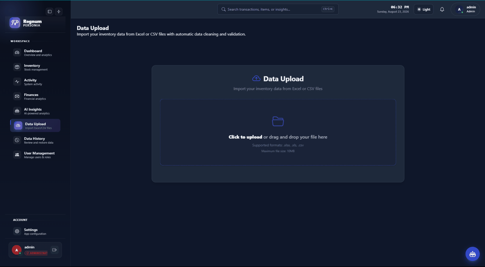

Everything in one place, nothing in the way
Pick an area below. Each module is designed so the most common task is the first thing you can do on the screen.
Built and runningNot yet field-proven
The morning glance, then the deep dig
The dashboard answers “is anything on fire?” in about four seconds. Inventory is where you go when the answer is yes.
- Live KPI tiles: stock value, expiring soon, below reorder, movement
- Batch-level tracking with expiry dates and supplier reference
- Stock movement history: who moved what, when, and why
- Saved views, so the counts you run weekly are one click away
- Command palette: jump anywhere without touching the mouse

screen-dashboard.png · 1920×1080
Stock alerts
Low-stock, out-of-stock and expiry warnings, grouped so you deal with a category once instead of dismissing twelve notifications.
Appointments view
A calendar of booked activity sitting next to the stock it will consume, so busy weeks are provisioned for in advance.
Facility comparison
Two or more sites side by side on consumption, spend per visit and waste, the fastest way to find a process problem.
Activity log
An append-only record of every adjustment, with the user and reason attached. Useful for audits and for the awkward conversations before them.
Search that forgives
Partial names, wrong spellings, supplier codes and batch numbers all find the same item. Nobody should need to know the catalogue name.
Guided first run
A setup wizard and an optional tour, so the first person to open Regnum is not staring at an empty database wondering where to begin.
Forecasting that shows its working
Regnum's models are deliberately legible, and deliberately scored. Each output carries the window it looked at, the confidence it has and the records it drew on, and every forecast is stored with a due date so it can be settled against what actually happened.
- Demand forecasting per item: current stock, average consumption, days of cover, supplier lead time and the action window that falls out of them
- Measured accuracy: predictions are settled against the real count on the due date, and the error is kept
- Wastage projection per batch: units that will still be on the shelf at expiry, priced from your own costs
- Anomaly detection against each item's own history, so it flags the day and leaves the interpretation to a person
- Refill suggestions with quantity, timing and the reasoning behind both
- Plain-language queries: ask a question, get a number and its source

screen-ai.png · 1920×1080
Adaptive reorder points
Minimum levels that move with the season instead of sitting at whatever was typed in during setup.
Forecast accuracy ledger
Predicted 80 units in 14 days, actual 84. Every forecast is settled and scored, so accuracy is a figure you can audit rather than a promise.
Redistribution signals
Where more than one site is running, projected excess at one is matched against projected shortfall at another before either date arrives.
Assistant
A built-in helper that can find a screen, explain a number, or draft the order you were about to work out by hand.
Finance that reconciles itself
Because stock movement and spend live in the same database, the finance screens are not a separate act of bookkeeping. They are the same events, counted in currency.
- Spend, revenue and margin by period, category and site
- Idle-stock value: money sitting on a shelf not moving
- Accounting exports, including a Sage-compatible connector
- Date-range filters that persist across screens
- Waste and write-off tracking, so the cost of expiry is visible

screen-finance.png · 1920×1080
| Question | Where it lives | Refreshes |
|---|---|---|
| How much money is sitting in medication inventory right now? | Finances → inventory value | Live |
| How much of that is at risk of expiring? | Finances → wastage exposure | Live |
| Which medicines are tying up the most capital? | Finances → capital by line | Live |
| What did emergency procurement cost us this quarter? | Finances → emergency orders | Live |
| Which supplier price changes affected our purchasing? | Suppliers → price history | Live |
| What did we spend on consumables this quarter? | Finances → spend by category | Live |
| How much stock value has not moved in 90 days? | Finances → idle stock | Live |
| What did expiry cost us last year? | Finances → write-offs | Live |
| What should the accountant receive? | Exports → accounting bundle | On demand |
| Which site earns most per visit? | Facility comparison | Live |
Bring the spreadsheet you already have
The import engine is built on the assumption that your file is imperfect, because it is, and so is everyone else's.
- CSV and Excel upload with column mapping you confirm once
- A repeatable ingestion path: spreadsheets today, a scheduled database pull or API feed as the site is ready for it
- A row-level report of what imported, what did not, and why
- Full import history: every upload is versioned and reversible
- Scheduled backups, with a restore you can actually test
- Optional sync between sites when you want a group view

screen-upload.png · 1920×1080
Who can see what, and who did what
Healthcare facilities handle records that deserve care. Regnum's answer is boring and deliberate: least privilege by default, and a log of everything.
- Four roles: standard user, staff, manager, administrator
- Per-screen permission guards, not just a hidden menu item
- Session handling with server-side logout and token invalidation
- Audit trail on every adjustment, export and permission change
- Local-first storage: you decide if data ever leaves the premises
security.jpg · 1400×1050
Standard user
Sees stock levels and can record movement. No financials, no user admin.
Staff
Adds and adjusts inventory, runs counts, uploads data files.
Manager
Everything above plus finances, forecasting and cross-site comparison.
Administrator
User management, permissions, backups, integrations and the audit history.
Regnum provides the controls; how they map to your regulatory obligations is a decision for you and your advisors. We are happy to walk a compliance officer through the architecture.
Want to see any of this on your own data?
A walkthrough takes about thirty minutes and uses a copy of your own file, not a demo dataset.